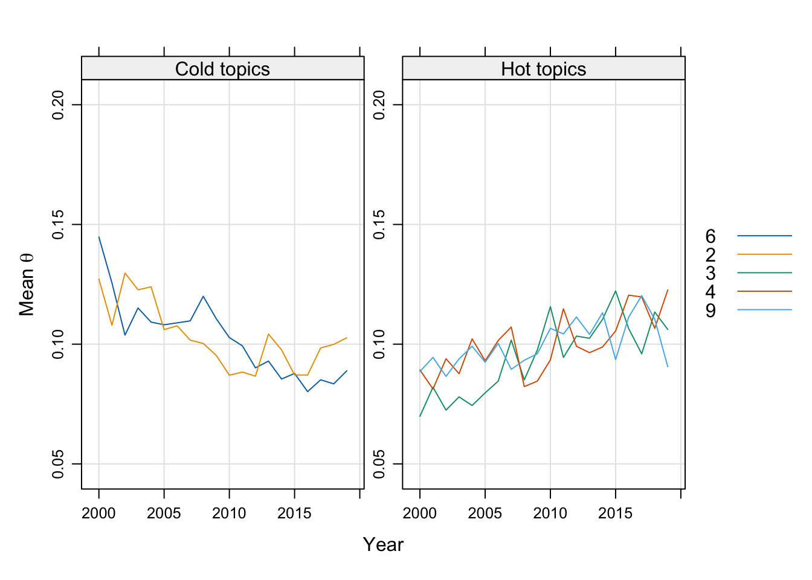

In linguistics, topic modeling is particularly valuable because it allows researchers to:
Identify patterns and themes in large collections of texts.
Analyze thematic structures without needing pre-labeled data.
Gain insights into the linguistic or cultural elements underlying different topics.
Common applications include examining corpora such as:
Academic articles to find recurring themes.
Social media data to analyze discourse.
Historical texts to trace the evolution of ideas over time.
17.2 Getting Started with R for Topic Modeling
To conduct topic modeling in R, we use the topicmodels package, which implements Latent Dirichlet Allocation (LDA), the most popular topic modeling algorithm. Here’s how to get started.
17.3 Install and Load Necessary Packages
First, we need to install and load several packages: - tm for text mining and preprocessing, - topicmodels for creating the LDA model, and - tidyverse and tidytext for data manipulation and visualization.
# Install packages if not already installedinstall.packages("tm")install.packages("topicmodels")install.packages("tidyverse")install.packages("tidytext")
# Load the librarieslibrary(tm)
Warning: package 'tm' was built under R version 4.3.3
Loading required package: NLP
library(topicmodels)
Warning: package 'topicmodels' was built under R version 4.3.3
── Conflicts ────────────────────────────────────────── tidyverse_conflicts() ──
✖ ggplot2::annotate() masks NLP::annotate()
✖ dplyr::filter() masks stats::filter()
✖ dplyr::lag() masks stats::lag()
ℹ Use the conflicted package (<http://conflicted.r-lib.org/>) to force all conflicts to become errors
library(tidytext)
17.4 Data Import and Preparation
Before we dive into topic modeling, let’s learn how to import data and prepare it for analysis. This step is essential for linguistics research since it ensures that we start with clean, manageable text data.
17.4.1 Importing the Data
For this example, we assume we have a CSV file named data_topicmodeling.csv. This file contains a collection of academic texts, with each row representing a document. The CSV file should be in the same working directory as your R script or project, or you should specify the full path.
# Import the datasetdata <-read_csv("data_topicmodeling.csv")
Rows: 1526 Columns: 5
── Column specification ────────────────────────────────────────────────────────
Delimiter: ","
chr (4): author, title_eng, journal_short, abstract
dbl (1): year
ℹ Use `spec()` to retrieve the full column specification for this data.
ℹ Specify the column types or set `show_col_types = FALSE` to quiet this message.
# Add a unique identifier for each documentdata <- tibble::rowid_to_column(data, "doc_id")
This code reads in the CSV file and creates a new column called doc_id, assigning a unique identifier to each document. The doc_id column will help us keep track of documents when we analyze and interpret the results.
17.4.2 Adding Custom Stop Words
In academic texts, there may be specific words or phrases frequently used across documents but not meaningful for topic modeling. For example, terms like “study,” “results,” or “analysis” may appear often but do not contribute to distinct thematic content. In this case, we use a custom stop words file.
Here, academic_stopwords.txt is a text file with one stop word per line, such as “method,” “study,” or “analysis.” Make sure this file is in your working directory or specify its full path. Loading these stop words allows us to exclude them during preprocessing, helping to focus the model on more meaningful terms.
17.5 Pre-processing with POS Tagging
Pre-processing with POS tagging helps us target specific types of words relevant to topic analysis. In linguistics, POS tagging can reveal the syntactic categories of words (e.g., noun, verb, adjective), allowing us to select only the most meaningful words for topic modeling.
17.5.1 Install and Load udpipe for POS Tagging
udpipe is an R package that provides access to pre-trained language models for POS tagging and dependency parsing. First, ensure udpipe is installed, then load it and download the English language model.
# Install and load the udpipe package# install.packages('udpipe')library(udpipe)# Download the English language model# ud_model <- udpipe_download_model(language = "english")# Load the language model# ud_model <- udpipe_load_model(ud_model$file_model)ud_model <-udpipe_load_model("english-ewt-ud-2.5-191206.udpipe")
17.5.2 Define the POS Tagging Function
The function ud_tagger_f below uses udpipe to annotate each document in our dataset. This function:
Applies POS tagging on the abstract column of our dataset.
Filters out terms listed in the stop_words file.
Selects only words classified as verbs, nouns, adjectives, or adverbs (since these words typically carry more thematic meaning).
# Define the POS tagging functionud_tagger_f <-function(input) {udpipe_annotate(ud_model, x = input$abstract, doc_id = input$doc_id, year = input$year) %>%as.data.frame() %>%filter(!lemma %in% stop_words) %>%subset(upos %in%c("VERB", "NOUN", "ADJ", "ADV"))}
17.5.3 Apply POS Tagging to the Dataset
The next step is to apply our ud_tagger_f function to the dataset and save the results. This tagged dataset will focus only on the filtered POS categories and exclude irrelevant words.
# Apply POS tagging to the datadata_tag <-ud_tagger_f(data)
17.5.4 Clean the Tokenized Data
With the POS-tagged data, we can now proceed to additional cleaning steps: 1. Remove numeric characters. 2. Delete punctuation. 3. Filter out single-character words, as they typically add little value. 4. Delete empty lemmas (words that become empty after cleaning).
# Select relevant columns and clean tokenstext_cleaning_tokens <- data_tag %>%select(doc_id, lemma)# Remove numbers and punctuationtext_cleaning_tokens$lemma <-gsub('[[:digit:]]+', '', text_cleaning_tokens$lemma) # Remove numberstext_cleaning_tokens$lemma <-gsub('[[:punct:]]+', '', text_cleaning_tokens$lemma) # Remove punctuation# Filter out one-letter wordstext_cleaning_tokens <- text_cleaning_tokens %>%filter(!(nchar(lemma) ==1))# Remove empty lemmastokens <- text_cleaning_tokens %>%filter(!(lemma ==""))# Convert lemmas to lowercasetokens$lemma <-tolower(tokens$lemma)# Add an index column for tracking purposestokens <- tokens %>%mutate(ind =row_number())head(tokens, 3)
filter(!(nchar(lemma) == 1)) filters out any single-character words.
Finally, we remove any empty rows created by filtering.
The result is a cleaned dataset called tokens, ready for topic modeling.
17.6 Model Building: Creating the Document-Feature Matrix (DFM)
After pre-processing, the next step in topic modeling is to create a DFM, which transforms our tokenized text data into a matrix suitable for topic modeling.
17.6.1 Aggregate Token Counts per Document
First, we need to calculate the frequency of each term (lemma) within each document. This step ensures that the DFM accurately reflects the number of times each term appears in each document.
`summarise()` has grouped output by 'doc_id'. You can override using the
`.groups` argument.
Here, we use group_by(doc_id, lemma) to group the data by each document and term, and summarise(count = n()) to calculate the count of each term in each document.
17.6.2 Convert to Document-Feature Matrix (DFM)
We use the quanteda and tidytext packages to convert our data into a DFM format, which is required for topic modeling. The cast_dfm function in tidytext helps convert a tidy data frame into a DFM.
# Load the necessary packageslibrary(quanteda)
Warning: package 'quanteda' was built under R version 4.3.3
Warning in .recacheSubclasses(def@className, def, env): undefined subclass
"ndiMatrix" of class "replValueSp"; definition not updated
See https://quanteda.io for tutorials and examples.
Attaching package: 'quanteda'
The following object is masked from 'package:tm':
stopwords
The following objects are masked from 'package:NLP':
meta, meta<-
library(tidytext)# Convert to Document-Feature Matrixdfm <- tokens_doc %>%cast_dfm(doc_id, lemma, count)
The cast_dfm function takes three arguments:
doc_id: the document identifier column,
lemma: the term or feature column, and
count: the frequency count of each term in each document.
The resulting DFM will have documents as rows, terms as columns, and frequency counts as the matrix values.
To check the dimensions of the DFM:
# Check dimensions of the DFMdim(dfm)
[1] 1517 6476
# Expected output: [1517, 6773]
Here, 1517 represents the number of documents, and 6773 represents the unique terms (or features) across all documents.
17.6.3 Trim the DFM
To reduce sparsity in the DFM and improve the model’s focus, we apply frequency thresholds. Removing terms that appear very infrequently helps in reducing noise.
# Trim the DFMtrimmed_dfm <-dfm_trim(dfm, min_termfreq =5, min_docfreq =10)
In this command: - min_termfreq = 5 removes terms that appear fewer than 5 times across all documents. - min_docfreq = 10 removes terms that appear in fewer than 10 documents.
After trimming, we check the new dimensions of the DFM:
# Check dimensions after trimmingdim(trimmed_dfm)
[1] 1517 1286
# Expected output: [1517, 1287]
In this example, the DFM is reduced to 1287 terms after removing low-frequency terms.
17.6.4 Save the Trimmed DFM
Saving the trimmed DFM allows us to use this matrix as input for our topic model in the next steps. It’s often helpful to save it as a CSV file for future use or verification.
# Convert the DFM to a data frame using `convert`dfm_dataframe <-convert(trimmed_dfm, to ="data.frame")# Save the data frame to a CSV filewrite.csv(dfm_dataframe, "trimmed_dfm.csv")
This file, trimmed_dfm.csv, is now ready for further analysis or to serve as the input for topic modeling.
To display the top features (most frequent terms) in the trimmed Document-Feature Matrix (DFM), we can use the topfeatures function from the quanteda package. This function will show the 20 most frequent terms in the trimmed_dfm.
# Display the top 20 features in the trimmed DFMtop_terms <-topfeatures(trimmed_dfm, n =20)top_terms
student english teacher use learn language school
3765 2520 2311 2111 1936 1515 1383
learner class test elementary teaching activity write
1246 1027 985 985 931 921 916
effect purpose vocabulary classroom education program
746 728 703 682 661 646
topfeatures(trimmed_dfm, n = 20) retrieves the 20 most frequent terms (features) in the trimmed_dfm.
top_terms will be a named vector where the names are terms, and the values are their frequencies across the corpus.
17.7 Building and Evaluating the LDA Model
This section covers Latent Dirichlet Allocation (LDA) with Perplexity Calculation. In this approach, we implement an LDA model and use cross-validation to determine the optimal number of topics by minimizing perplexity, a measure of model quality. This is done through 5-fold cross-validation, testing multiple topic counts to find the most appropriate configuration for the topic model.
17.7.1 Convert DFM to Document-Term Matrix (DTM)
To run an LDA model using the topicmodels package, we need the data in a DocumentTermMatrix format. The convert function from the quanteda package simplifies this process, converting the trimmed_dfm to a DTM format compatible with topicmodels.
# Load the necessary packagelibrary(topicmodels)# Convert the trimmed DFM to a Document-Term Matrix for topic modelingdtm <-convert(trimmed_dfm, to ="topicmodels", omit_empty =TRUE)# Check the dimensions of the DTMdim(dtm) # Expected output: [1517, 1287]
[1] 1517 1286
17.7.2 Set Up Parallel Processing for Cross-Validation
To optimize the topic model, we use 5-fold cross-validation across multiple values of k (the number of topics). Parallel processing speeds up this process by allowing each fold or candidate k value to be processed on a separate CPU core.
# Load libraries for parallel processinglibrary(doParallel)
Loading required package: foreach
Attaching package: 'foreach'
The following objects are masked from 'package:purrr':
accumulate, when
Loading required package: iterators
Loading required package: parallel
library(scales)
Attaching package: 'scales'
The following object is masked from 'package:purrr':
discard
The following object is masked from 'package:readr':
col_factor
# Set up a cluster with one fewer core than availablecluster <-makeCluster(detectCores(logical =TRUE) -1)registerDoParallel(cluster)# Load `topicmodels` on all cluster nodesclusterEvalQ(cluster, {library(topicmodels)})
17.7.3 Define LDA Model Parameters and Cross-Validation Settings
Set the parameters for the LDA model:
burnin, iter, and keep control the Gibbs sampling process.
folds sets the number of cross-validation folds.
candidate_k provides the values of k (number of topics) to test.
# Define LDA model parametersburnin =1000iter =1000keep =50# Define cross-validation settingsfolds <-5n <-nrow(dtm)splitfolds <-sample(1:folds, n, replace =TRUE)candidate_k <-c(10:30) # different candidate values for the number of topics# Export necessary objects to all cluster nodesclusterExport(cluster, c("dtm", "burnin", "iter", "keep", "splitfolds", "folds", "candidate_k"))
17.7.4 Perform 5-Fold Cross-Validation for Perplexity Calculation
The foreach loop runs cross-validation for each candidate value of k in parallel. For each candidate k, it: 1. Splits the data into training and validation sets. 2. Fits an LDA model on the training set. 3. Calculates the perplexity on the validation set.
# Run cross-validation for each candidate number of topicssystem.time({ results <-foreach(j =1:length(candidate_k), .combine = rbind) %dopar% { k <- candidate_k[j] results_1k <-matrix(0, nrow = folds, ncol =2)colnames(results_1k) <-c("k", "perplexity")for(i in1:folds){ train_set <- dtm[splitfolds != i, ] valid_set <- dtm[splitfolds == i, ] fitted <-LDA(train_set, k = k, method ="Gibbs",control =list(burnin = burnin, iter = iter, keep = keep)) results_1k[i,] <-c(k, perplexity(fitted, newdata = valid_set)) }return(results_1k) }})# Stop the cluster after cross-validationstopCluster(cluster)# Convert results to a data frameresults_df <-as.data.frame(results)
17.7.5 Visualize the Perplexity Scores for Different Topic Counts
To determine the optimal number of topics, plot the perplexity scores against the candidate values of k. The ggplot2 package provides a straightforward way to visualize this relationship.
# Load ggplot2 for plottinglibrary(ggplot2)# Plot perplexity scores for each candidate number of topicsggplot(results_df, aes(x = k, y = perplexity)) +geom_point() +geom_smooth(se =FALSE) +ggtitle("5-Fold Cross-Validation of Topic Modeling") +labs(x ="Candidate Number of Topics", y ="Perplexity")
In the plot, the x-axis represents the number of topics, and the y-axis shows the perplexity scores. The optimal number of topics minimizes perplexity, indicating a balance between model complexity and generalization to unseen data.
17.8 Training and Analyzing the LDA Model
After determining the optimal number of topics, we can train a final LDA model using the entire dataset. This section demonstrates how to build the model, interpret its results, and save relevant matrices for further analysis.
17.8.1 Define the Number of Topics and Train the LDA Model
In this example, we set K = 10 to define the number of topics and train the model using the Gibbs sampling method, a common approach for LDA.
# Load the topicmodels packagelibrary(topicmodels)# Define the number of topicsK <-10# Train the LDA modellda_model <-LDA(dtm, k = K, method ="Gibbs", control =list(alpha =50/K, delta =0.1, verbose =25L, seed =123, burnin =100, iter =500))
In this code: - alpha = 50/K and delta = 0.1 are hyperparameters that control the distribution of topics in documents and words in topics, respectively. - seed = 123 ensures reproducibility. - burnin = 100 and iter = 500 control the number of Gibbs sampling iterations.
17.8.2 Extract Posterior Distributions
The posterior function extracts the posterior distributions from the trained LDA model, giving us insight into the topics and terms.
# Obtain the posterior distributions of the LDA modeltmResult <-posterior(lda_model)# Check the attributes of the resultattributes(tmResult)
$names
[1] "terms" "topics"
# Save the document-topic distribution to a CSV filewrite.csv(tmResult$topics, "tmResult.csv")
The posterior function returns a list with: - tmResult$topics: a document-topic distribution matrix (theta), where each row represents a document and each column represents a topic. - tmResult$terms: a topic-term distribution matrix (beta), where each row represents a topic and each column represents a term.
17.8.3 Analyze the Topic-Term Distribution (beta)
The beta matrix shows the probability of each word appearing in each topic. This information can help us interpret the topics by identifying the most likely words for each one.
# Extract the topic-term distribution matrixbeta <- tmResult$terms# Save the beta matrix to a CSV filewrite.csv(beta, 'beta.csv')# Check the dimensions of the beta matrixdim(beta) # Expected output: K x ncol(DTM)
[1] 10 1286
To verify that each row of beta represents a probability distribution (i.e., sums to 1):
# Verify that each row in beta sums to 1rowSums(beta)
1 2 3 4 5 6 7 8 9 10
1 1 1 1 1 1 1 1 1 1
17.8.4 Analyze the Document-Topic Distribution (theta)
Each row in the theta matrix represents a document, and each column represents a topic. The values indicate the probability of each topic in each document.
# Extract the document-topic distribution matrixtheta <- tmResult$topics# Save the theta matrix to a CSV filewrite.csv(theta, 'theta.csv')
17.8.5 Create and Save a Matrix of Top Words for Each Topic
To facilitate interpretation, it’s often helpful to list the top words for each topic in a more human-readable format. We can transpose the beta matrix and round values to simplify the results.
# Round the beta values to three decimal places for readabilityphi_matrix <-round(beta, 3)# Transpose and convert to data frame for savingT_phi_matrix <-as.data.frame(t(phi_matrix))names(T_phi_matrix) <-paste("Topic", 1:K)# Save the transposed matrix with topic wordswrite.csv(T_phi_matrix, "lda_topic_words.csv")# Display the first few words for each topicT_phi_matrix[1:K, ]
In this transposed matrix, each row corresponds to a word, and each column represents a topic, showing the top words for each topic.
This analysis yields several matrices:
beta: Topic-term distribution, showing the most probable words per topic.
theta: Document-topic distribution, showing topic proportions for each document.
Transposed beta: A matrix of top words per topic, which can be saved for easy inspection.
These outputs allow us to interpret and label topics meaningfully, bringing us closer to understanding the thematic structure in our dataset.
17.9 Extracting and Visualizing Topics
17.9.1 Extract the Top 15 Words for Each Topic
The terms function can be used to identify the top terms in each topic. In this example, we extract the 15 most probable words for each topic and save the results to a CSV file for easy reference.
# Extract the top 15 words for each topictop_words <-terms(lda_model, 15)# Save the top words to a CSV filewrite.csv(top_words, "lda_topic_15words.csv")
This code produces a table where each column represents a topic, and each row lists one of the top 15 words associated with that topic. This table can be helpful for interpreting and labeling topics.
17.9.2 Visualize the LDA Model with LDAvis
Visualizing the LDA model provides a dynamic way to explore topics. The LDAvis package, combined with the topicmodels2LDAvis function below, generates an interactive visualization that displays: - The distance between topics (e.g., similar topics will appear closer together). - The most influential words within each topic.
17.9.2.1 Install and Load Required Libraries
Ensure that LDAvis and servr are installed, as they are required for creating and serving the visualization.
# Install and load required packages# install.packages("LDAvis")library(LDAvis)# install.packages("servr")library(servr)
17.9.2.2 Define a Helper Function for LDAvis
To visualize a model created with the topicmodels package, we need a custom function to convert the LDA model to the format required by LDAvis. The following topicmodels2LDAvis function extracts the necessary information from the lda_model.
# Helper function to convert the LDA model to LDAvis formattopicmodels2LDAvis <-function(x, ...){ post <- topicmodels::posterior(x)if (ncol(post[["topics"]]) <3) stop("The model must contain > 2 topics") mat <- x@wordassignments LDAvis::createJSON(phi = post[["terms"]], theta = post[["topics"]],vocab =colnames(post[["terms"]]),doc.length = slam::row_sums(mat, na.rm =TRUE),term.frequency = slam::col_sums(mat, na.rm =TRUE) )}
This function extracts:
phi (topic-term distribution matrix).
theta (document-topic distribution matrix).
vocab (list of terms).
doc.length (number of terms per document).
term.frequency (frequency of each term in the entire corpus).
17.9.2.3 Generate and Display the Visualization
Finally, we use the serVis function from LDAvis to create and serve the visualization locally in a web browser.
# Generate and view the LDA visualizationLDAvis::serVis(topicmodels2LDAvis(lda_model))
This command opens an interactive visualization in your browser, where:
Each circle represents a topic.
The size of each circle indicates the prevalence of the topic in the corpus.
Words within each topic are displayed on the right, ranked by their importance.
17.10 Topic Ranking and Trends
This section expands on Topic Ranking and introduces a Hot and Cold Topics Analysis. Topic ranking enables us to identify and name dominant topics across the collection. Hot and cold topic analysis explores topic trends over time, identifying which topics are gaining or losing prominence.
17.10.1 Step 1: Rank Topics by Defining Terms
To create meaningful names for each topic, we can identify the top defining words per topic based on specificity rather than mere frequency. The top.topic.words function from the lda package ranks terms by specificity, which highlights unique terms that best describe each topic.
# Install and load the lda package if not installed# install.packages('lda')library(lda)# Generate topic names by selecting the top 6 terms for each topictopicNames <-apply(lda::top.topic.words(beta, 6, by.score =TRUE), 2, paste, collapse =" ")
In this code: - top.topic.words(beta, 6, by.score = TRUE) selects the top six terms per topic from the beta matrix. - apply(..., 2, paste, collapse = " ") concatenates these terms into a single name for each topic.
To assess which topics are most prevalent in the corpus, we calculate the average topic proportions across all documents.
# Calculate average topic proportions across all documentstopicProportions <-colSums(theta) /nrow(dtm) # mean probabilities over all documents# Assign names to the topic proportionsnames(topicProportions) <- topicNames# Save topic proportions to a CSVwrite.csv(topicProportions, "topicProportions.csv")# Display topics sorted by proportionsorted_topic_proportions <-sort(topicProportions, decreasing =TRUE)sorted_topic_proportions
teacher english teaching education teach primary
0.10239457
test strategy speak task proficiency listen
0.10149210
vocabulary effect read reading experimental ability
0.10126999
english school elementary textbook material grade
0.10089469
language competence context child communicative approach
0.10075152
student learn learning class use self
0.09991618
word text use learner form type
0.09975261
program online course use develop design
0.09964280
student write writing participant data feedback
0.09771293
activity learner process classroom interaction role
0.09617261
The topicProportions vector indicates the overall importance of each topic in the corpus. Sorting by these values reveals the most prominent topics.
17.10.3 Step 3: Count Primary Topics in Each Document
Next, we can identify the most dominant topic (primary topic) within each document, helping us understand which topics are most frequently the main focus of documents.
# Initialize a counter for primary topicscountsOfPrimaryTopics <-rep(0, K)names(countsOfPrimaryTopics) <- topicNames# Count primary topics across documentsfor (i in1:nrow(dtm)) { topicsPerDoc <- theta[i, ] # Select topic distribution for document i primaryTopic <-order(topicsPerDoc, decreasing =TRUE)[1] # Identify the primary topic countsOfPrimaryTopics[primaryTopic] <- countsOfPrimaryTopics[primaryTopic] +1}# Save primary topic counts to CSVwrite.csv(countsOfPrimaryTopics, 'countsOfPrimaryTopics.csv')# Display sorted counts of primary topicssorted_counts_primary_topics <-sort(countsOfPrimaryTopics, decreasing =TRUE)sorted_counts_primary_topics
teacher english teaching education teach primary
201
vocabulary effect read reading experimental ability
198
word text use learner form type
168
test strategy speak task proficiency listen
164
language competence context child communicative approach
155
program online course use develop design
151
student write writing participant data feedback
137
english school elementary textbook material grade
135
student learn learning class use self
124
activity learner process classroom interaction role
84
This count indicates how often each topic is the primary focus in documents, providing a measure of topic prominence.
17.11 Hot and Cold Topics Analysis
To observe trends over time, we analyze topic proportions across years to identify “hot” (increasing) and “cold” (decreasing) topics.
17.11.1 Step 1: Prepare Data for Temporal Analysis
We first convert tokenized data to a “wide” format to facilitate yearly aggregation. This transformation makes each document a single row, with terms as columns, simplifying further analysis.
# Spread tokens to wide formatlibrary(dplyr)tokens_year <- tokens %>%group_by(doc_id) %>%mutate(ind =row_number()) %>% tidyr::spread(key = ind, value = lemma)# Replace NA values with empty stringstokens_year[is.na(tokens_year)] <-""# Unite terms back into a single column for each documenttokens_year <- tidyr::unite(tokens_year, abstract, -doc_id, sep =" ")tokens_year$abstract <-trimws(tokens_year$abstract)# Merge with original data to add additional document information (e.g., year)tokens_year <-merge(x = tokens_year, y = data, by ="doc_id")
17.11.2 Step 2: Calculate Topic Proportions Over Time
By aggregating topic proportions by year, we can observe how each topic’s importance changes over time.
# Install and load reshape if not already installed# install.packages('reshape')library(reshape)
Attaching package: 'reshape'
The following object is masked from 'package:lubridate':
stamp
The following object is masked from 'package:dplyr':
rename
The following objects are masked from 'package:tidyr':
expand, smiths
# Calculate the mean topic proportion per yeartopic_proportion_per_year <-aggregate(theta, by =list(year = tokens_year$year), mean)# Save topic proportions per year to a CSVwrite.csv(topic_proportion_per_year, 'topic_proportion_per_year.csv')
This code creates a table where each row represents a year and each column represents the average proportion of a topic for that year.
17.12 Hot and Cold Topics Analysis
In this section, we conduct Hot and Cold Topics Analysis using a time-series approach to identify topics that have increased (hot topics) or decreased (cold topics) in prominence over time. This analysis involves calculating topic trends across years, assessing statistical significance, and visualizing the most prominent hot and cold topics.
17.12.1 Step 1: Calculate Mean Topic Proportions by Year
To identify hot and cold topics, we first calculate the mean proportion of each topic per year. This provides a time series of topic prevalence that we can analyze for trends.
library(tm)# Extract unique yearsyears <-levels(factor(tokens_year$year)) # Check years, e.g., 2000 ~ 2019# Set the number of topicstopics_n <- K # In this case, 10# Extract the document-topic distribution matrixtheta_2 <-posterior(lda_model)$topics# Calculate the mean topic proportions by yeartheta_mean_by_year_by <-by(theta_2, tokens_year$year, colMeans)theta_mean_by_year <-do.call("rbind", theta_mean_by_year_by) # Combine results into a matrix# Rename columns and create a time series objectcolnames(theta_mean_by_year) <-paste(1:topics_n)theta_mean_by_year_ts <-ts(theta_mean_by_year, start =as.integer(years[1]))theta_mean_by_year_time <-time(theta_mean_by_year)# Save results to CSVwrite.csv(theta_mean_by_year, "theta_mean_by_year.csv")theta_mean_by_year_time
17.12.2 Step 2: Identify Hot and Cold Topics with Linear Regression
To determine which topics are trending up (hot) or down (cold) over time, we fit a linear regression model for each topic’s time series. The slope of each model indicates the direction and magnitude of change.
# Perform linear regression on topic proportions over timetheta_mean_lm <-apply(theta_mean_by_year, 2, function(x) lm(x ~ theta_mean_by_year_time))# Extract regression coefficients and p-valuestheta_mean_lm_coef <-lapply(theta_mean_lm, function(x) coef(summary(x)))# Extract significance (p-values) and slopestheta_mean_lm_coef_sign <-sapply(theta_mean_lm_coef, '[', "theta_mean_by_year_time", "Pr(>|t|)")theta_mean_lm_coef_slope <-sapply(theta_mean_lm_coef, '[', "theta_mean_by_year_time", "Estimate")# Separate positive and negative slopes for analysistheta_mean_lm_coef_slope_pos <- theta_mean_lm_coef_slope[theta_mean_lm_coef_slope >=0]theta_mean_lm_coef_slope_neg <- theta_mean_lm_coef_slope[theta_mean_lm_coef_slope <0]# Save positive and negative slopes to CSVwrite.csv(theta_mean_lm_coef_slope_pos, 'theta_mean_lm_coef_slope_positive.csv')write.csv(theta_mean_lm_coef_slope_neg, 'theta_mean_lm_coef_slope_negative.csv')
17.12.3 Step 3: Evaluate Significance Levels
We test the statistical significance of each trend using various p-value thresholds to determine which trends are likely meaningful.
# Set p-value thresholdsp_level <-c(0.05, 0.01, 0.001, 0.0001)# Identify topics with significant slopes at each p-levelsignificance_total <-sapply(p_level, function(x) (theta_mean_lm_coef_sign[theta_mean_lm_coef_sign < x]))significance_neg <-sapply(1:length(p_level), function(x) intersect(names(theta_mean_lm_coef_slope_neg), names(significance_total[[x]])))significance_pos <-sapply(1:length(p_level), function(x) intersect(names(theta_mean_lm_coef_slope_pos), names(significance_total[[x]])))
17.12.4 Step 4: Visualize Hot and Cold Topics
Using the lattice package, we can plot the time series of hot and cold topics to observe their changes over time.
library(lattice)# Select top hot and cold topics for visualizationtopics_cold <-as.numeric(names(sort(theta_mean_lm_coef_slope[significance_neg[[2]]], decreasing =FALSE)))topics_hot <-as.numeric(names(sort(theta_mean_lm_coef_slope[significance_pos[[2]]], decreasing =TRUE)))# Combine selected hot and cold topics into a single time series matrixcold_and_hot_ts <-cbind(theta_mean_by_year_ts[, topics_cold[1:2]], theta_mean_by_year_ts[, topics_hot[1:3]], deparse.level =0) # Adjust numbers as needed# Rename columns to indicate topic numberscolnames(cold_and_hot_ts) <-as.character(c(topics_cold[1:2], topics_hot[1:3]))# Plot hot and cold topics over timeprint(xyplot(cold_and_hot_ts, layout =c(2, 1), screens =c(rep("Cold topics", 2), rep("Hot topics", 3)), # Adjust as neededsuperpose =TRUE, ylim =c(0.05, 0.2), ylab =expression(paste("Mean ", theta)), xlab ="Year", type =c("l", "g"), auto.key =list(space ="right"), scales =list(x =list(alternating =FALSE))))

This plot displays the time trends for the top hot and cold topics. Hot topics are increasing over time, while cold topics are decreasing, providing a visual representation of shifting thematic focus in the corpus.
To further analyze, extract regression summaries for each topic’s time series.
# Extract detailed regression summaries for all topicsreg_result <-lapply(theta_mean_lm, function(x) summary(x))reg_result
$`1`
Call:
lm(formula = x ~ theta_mean_by_year_time)
Residuals:
Min 1Q Median 3Q Max
-0.013061 -0.008160 -0.004247 0.006060 0.025992
Coefficients:
Estimate Std. Error t value Pr(>|t|)
(Intercept) 0.1067095 0.0053069 20.108 8.78e-14 ***
theta_mean_by_year_time -0.0004004 0.0004430 -0.904 0.378
---
Signif. codes: 0 '***' 0.001 '**' 0.01 '*' 0.05 '.' 0.1 ' ' 1
Residual standard error: 0.01142 on 18 degrees of freedom
Multiple R-squared: 0.04342, Adjusted R-squared: -0.009723
F-statistic: 0.817 on 1 and 18 DF, p-value: 0.378
$`2`
Call:
lm(formula = x ~ theta_mean_by_year_time)
Residuals:
Min 1Q Median 3Q Max
-0.015217 -0.007411 -0.002695 0.008784 0.014994
Coefficients:
Estimate Std. Error t value Pr(>|t|)
(Intercept) 0.1201246 0.0046455 25.858 1.1e-15 ***
theta_mean_by_year_time -0.0016232 0.0003878 -4.186 0.000556 ***
---
Signif. codes: 0 '***' 0.001 '**' 0.01 '*' 0.05 '.' 0.1 ' ' 1
Residual standard error: 0.01 on 18 degrees of freedom
Multiple R-squared: 0.4932, Adjusted R-squared: 0.4651
F-statistic: 17.52 on 1 and 18 DF, p-value: 0.0005558
$`3`
Call:
lm(formula = x ~ theta_mean_by_year_time)
Residuals:
Min 1Q Median 3Q Max
-0.015343 -0.005375 -0.002519 0.004338 0.019769
Coefficients:
Estimate Std. Error t value Pr(>|t|)
(Intercept) 0.0716781 0.0041228 17.386 1.07e-12 ***
theta_mean_by_year_time 0.0022019 0.0003442 6.398 5.04e-06 ***
---
Signif. codes: 0 '***' 0.001 '**' 0.01 '*' 0.05 '.' 0.1 ' ' 1
Residual standard error: 0.008875 on 18 degrees of freedom
Multiple R-squared: 0.6946, Adjusted R-squared: 0.6776
F-statistic: 40.93 on 1 and 18 DF, p-value: 5.042e-06
$`4`
Call:
lm(formula = x ~ theta_mean_by_year_time)
Residuals:
Min 1Q Median 3Q Max
-0.015483 -0.006485 -0.001401 0.008384 0.012499
Coefficients:
Estimate Std. Error t value Pr(>|t|)
(Intercept) 0.0842500 0.0042190 19.969 9.89e-14 ***
theta_mean_by_year_time 0.0015020 0.0003522 4.265 0.000466 ***
---
Signif. codes: 0 '***' 0.001 '**' 0.01 '*' 0.05 '.' 0.1 ' ' 1
Residual standard error: 0.009082 on 18 degrees of freedom
Multiple R-squared: 0.5026, Adjusted R-squared: 0.475
F-statistic: 18.19 on 1 and 18 DF, p-value: 0.0004661
$`5`
Call:
lm(formula = x ~ theta_mean_by_year_time)
Residuals:
Min 1Q Median 3Q Max
-0.0094718 -0.0032604 -0.0003354 0.0039621 0.0100595
Coefficients:
Estimate Std. Error t value Pr(>|t|)
(Intercept) 0.0952110 0.0026812 35.511 <2e-16 ***
theta_mean_by_year_time 0.0003921 0.0002238 1.752 0.0968 .
---
Signif. codes: 0 '***' 0.001 '**' 0.01 '*' 0.05 '.' 0.1 ' ' 1
Residual standard error: 0.005772 on 18 degrees of freedom
Multiple R-squared: 0.1457, Adjusted R-squared: 0.09823
F-statistic: 3.07 on 1 and 18 DF, p-value: 0.09678
$`6`
Call:
lm(formula = x ~ theta_mean_by_year_time)
Residuals:
Min 1Q Median 3Q Max
-0.0170167 -0.0056107 -0.0003921 0.0017193 0.0190515
Coefficients:
Estimate Std. Error t value Pr(>|t|)
(Intercept) 0.1281042 0.0037994 33.717 < 2e-16 ***
theta_mean_by_year_time -0.0024305 0.0003172 -7.663 4.5e-07 ***
---
Signif. codes: 0 '***' 0.001 '**' 0.01 '*' 0.05 '.' 0.1 ' ' 1
Residual standard error: 0.008179 on 18 degrees of freedom
Multiple R-squared: 0.7654, Adjusted R-squared: 0.7524
F-statistic: 58.73 on 1 and 18 DF, p-value: 4.496e-07
$`7`
Call:
lm(formula = x ~ theta_mean_by_year_time)
Residuals:
Min 1Q Median 3Q Max
-0.0124647 -0.0048475 -0.0009775 0.0037884 0.0177997
Coefficients:
Estimate Std. Error t value Pr(>|t|)
(Intercept) 0.1003627 0.0036462 27.525 3.66e-16 ***
theta_mean_by_year_time -0.0003204 0.0003044 -1.053 0.306
---
Signif. codes: 0 '***' 0.001 '**' 0.01 '*' 0.05 '.' 0.1 ' ' 1
Residual standard error: 0.007849 on 18 degrees of freedom
Multiple R-squared: 0.05798, Adjusted R-squared: 0.005644
F-statistic: 1.108 on 1 and 18 DF, p-value: 0.3065
$`8`
Call:
lm(formula = x ~ theta_mean_by_year_time)
Residuals:
Min 1Q Median 3Q Max
-0.015223 -0.005032 0.001569 0.004744 0.010206
Coefficients:
Estimate Std. Error t value Pr(>|t|)
(Intercept) 0.0895604 0.0035924 24.93 2.08e-15 ***
theta_mean_by_year_time 0.0008726 0.0002999 2.91 0.00934 **
---
Signif. codes: 0 '***' 0.001 '**' 0.01 '*' 0.05 '.' 0.1 ' ' 1
Residual standard error: 0.007733 on 18 degrees of freedom
Multiple R-squared: 0.3199, Adjusted R-squared: 0.2821
F-statistic: 8.467 on 1 and 18 DF, p-value: 0.009345
$`9`
Call:
lm(formula = x ~ theta_mean_by_year_time)
Residuals:
Min 1Q Median 3Q Max
-0.019007 -0.003908 0.001191 0.004708 0.012692
Coefficients:
Estimate Std. Error t value Pr(>|t|)
(Intercept) 0.089360 0.003606 24.782 2.31e-15 ***
theta_mean_by_year_time 0.001012 0.000301 3.361 0.00348 **
---
Signif. codes: 0 '***' 0.001 '**' 0.01 '*' 0.05 '.' 0.1 ' ' 1
Residual standard error: 0.007762 on 18 degrees of freedom
Multiple R-squared: 0.3856, Adjusted R-squared: 0.3515
F-statistic: 11.3 on 1 and 18 DF, p-value: 0.003476
$`10`
Call:
lm(formula = x ~ theta_mean_by_year_time)
Residuals:
Min 1Q Median 3Q Max
-0.016030 -0.002640 0.002092 0.003406 0.016762
Coefficients:
Estimate Std. Error t value Pr(>|t|)
(Intercept) 0.1146395 0.0040032 28.637 < 2e-16 ***
theta_mean_by_year_time -0.0012061 0.0003342 -3.609 0.00201 **
---
Signif. codes: 0 '***' 0.001 '**' 0.01 '*' 0.05 '.' 0.1 ' ' 1
Residual standard error: 0.008618 on 18 degrees of freedom
Multiple R-squared: 0.4198, Adjusted R-squared: 0.3876
F-statistic: 13.03 on 1 and 18 DF, p-value: 0.002006
The reg_result object contains detailed regression summaries for each topic, including coefficients, p-values, and R-squared values.
Summary
This hot and cold topics analysis highlights the changing prominence of topics over time:
Hot Topics: Topics with significantly positive trends.
Cold Topics: Topics with significantly negative trends.
These trends provide insights into the evolution of topics, revealing which areas of discussion have gained or lost interest. This analysis is especially valuable for diachronic studies and can uncover shifts in focus across different time periods in the dataset.